Rust는 어떤 언어인가요
영상은 '이미 많은 곳이 옮기고 있다'는 장면으로 시작해요. 카드 여섯 장에 리눅스 커널, 마이크로소프트, 안드로이드, GitHub Copilot, X, Hugging Face가 있어요. 밝게 켜진 두 장이 특히 눈여겨볼 곳이에요. 리눅스 커널은 2025년 12월 실험 단계를 끝내고 C 옆에 Rust를 정식으로 들였어요. 마이크로소프트는 한 엔지니어가 2030년까지 C·C++를 Rust로 옮기겠다는 연구 목표를 걸었어요.
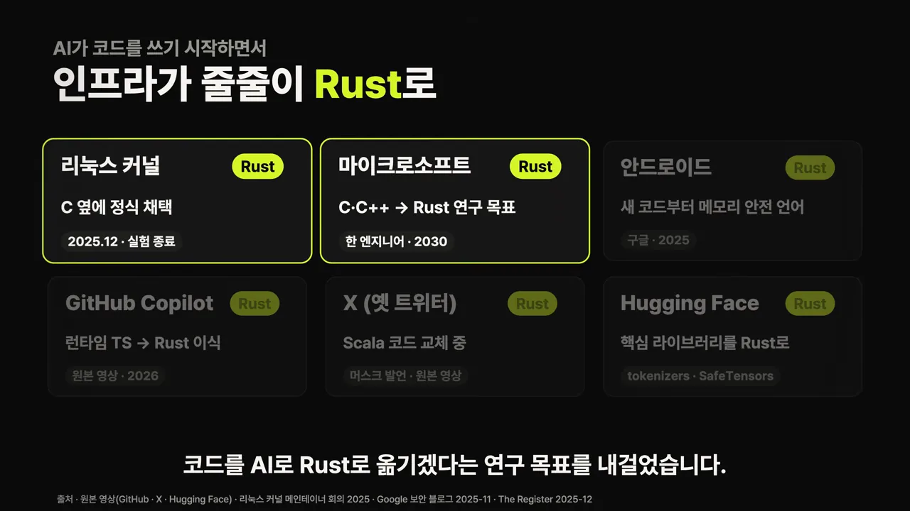
빠른 이유: 미리 번역해 둔 책
Rust는 Mozilla에서 시작해 2015년에 첫 정식 버전이 나온 언어예요. 영상은 'C·C++만큼 빠르면서 메모리 실수를 컴파일러가 미리 막아 주는 언어'라고 한 줄로 정리해요. 아래 슬라이드 위 칸의 Python은 코드가 통역사를 거쳐 CPU에 닿아요. 아래 칸의 Rust는 실행 전에 기계어로 미리 번역해 두고 그걸 바로 읽어요. 노란 띠에 적힌 'C·C++도 이쪽'이라는 말이 다음 이야기로 이어져요.
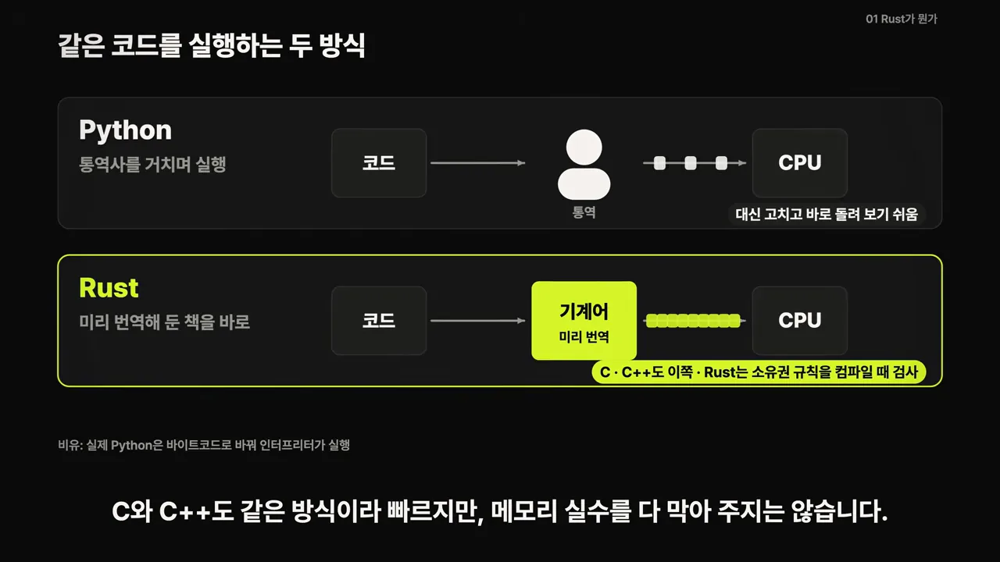
C·C++도 미리 번역하니 빠르지만, 메모리 실수를 다 막아 주지는 않아요. 원래 영상은 이 차이를 이렇게 말해요.
Instead of letting these mistakes slip through and blow up while the program is running, it turns them into compile errors.
실수가 빠져나가 실행 중에 터지게 두는 대신, Rust는 그걸 컴파일 에러로 바꿔요.
— 원래 영상 (이 영상 01:09 부근)
출고 전 검사관과 소유권
그래서 영상은 Rust 컴파일러를 '출고 전 검사관'에 비유해요. 규칙을 어긴 코드는 실행 파일 자체가 만들어지지 않아요. 그 규칙의 핵심이 소유권이에요. 슬라이드의 중괄호가 주인의 범위이고, 노란 칸이 '값 · 주인 1명'이에요. 범위가 닫히는 순간 값도 함께 치워져요.
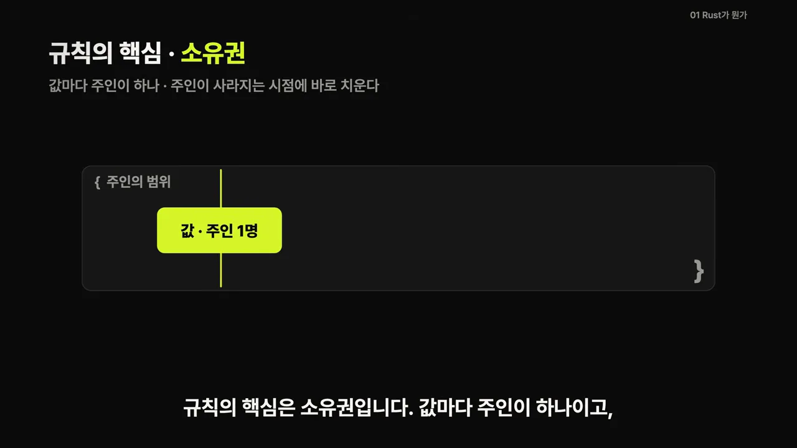
치울 시점을 미리 알면 따로 청소할 필요가 없어요. 아래 슬라이드의 Python 막대에는 중간에 빨간 구간 '모아서 치우는 정리(GC)'가 끼어 있어요. Rust 막대는 끊김 없이 이어지고, 아래에 '추적 GC의 일괄 정리 없음 · 끝나는 지점마다 치움'이라고 적혀 있어요.
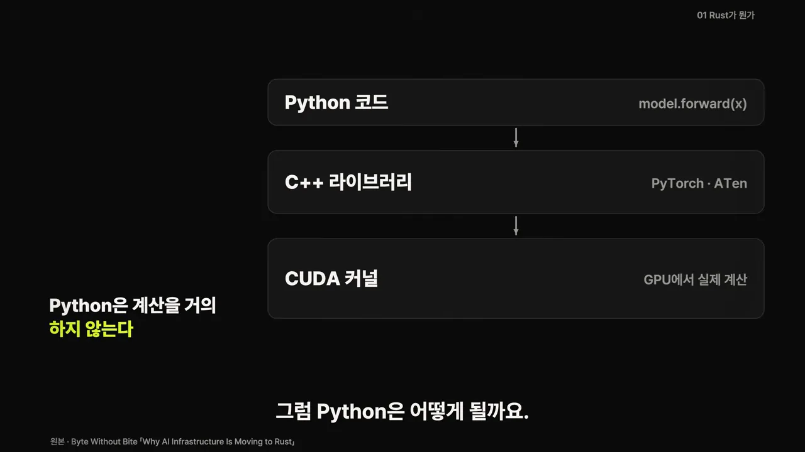
Python은 운전대, Rust는 엔진 쪽
그럼 Python은 밀려날까요? 영상은 Python과 그 밑의 관계부터 그려요. 원래 영상의 예시는 torch.matmul(a, b) 한 줄이에요. Python은 이 일을 PyTorch의 C++ 라이브러리(ATen)에 넘기고, 그 라이브러리가 다시 GPU(Graphics Processing Unit)의 CUDA(Compute Unified Device Architecture) 커널에 넘겨요. 아래 슬라이드 왼쪽 운전대가 Python 코드, 톱니바퀴가 그 아래 두 층이에요. 노란 'Rust' 딱지가 C++ 라이브러리 칸에 붙어 있어요.
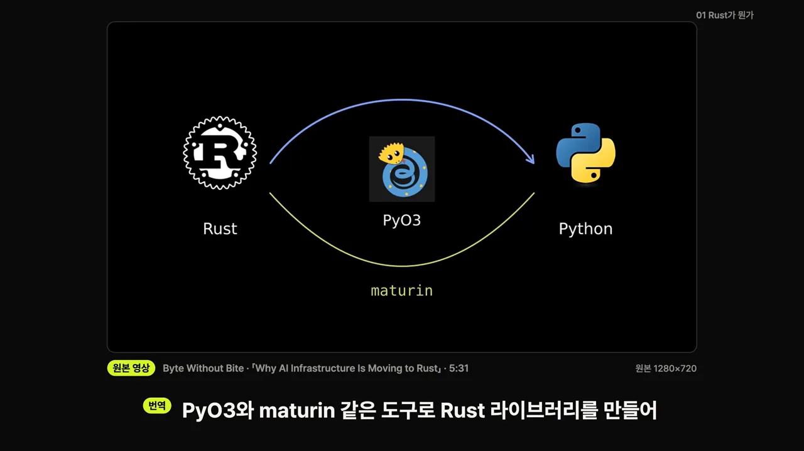
엔진을 바꿔도 운전대는 그대로 쓸 수 있는 건 다리 역할을 하는 도구 덕분이에요. 슬라이드 가운데 PyO3가 Rust와 Python을 잇고, 아래 maturin이 그걸 패키지로 묶어요. 이렇게 만든 Rust 라이브러리는 Python에서 다른 모듈처럼 import해요.
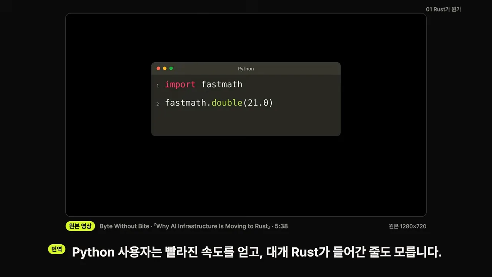
실제로 이미 많이 쓰는 도구 안에 Rust가 들어 있어요. 아래 여섯 칸이 영상이 든 예예요. OpenAI 토크나이저 tiktoken은 핵심이 Rust예요. Pydantic은 Rust로 다시 쓴 뒤 빨라졌어요. Polars는 큰 데이터에서 pandas를 앞서요. Ruff는 코드 검사기, uv는 패키지 관리자예요. Hugging Face tokenizers도 핵심이 Rust예요.
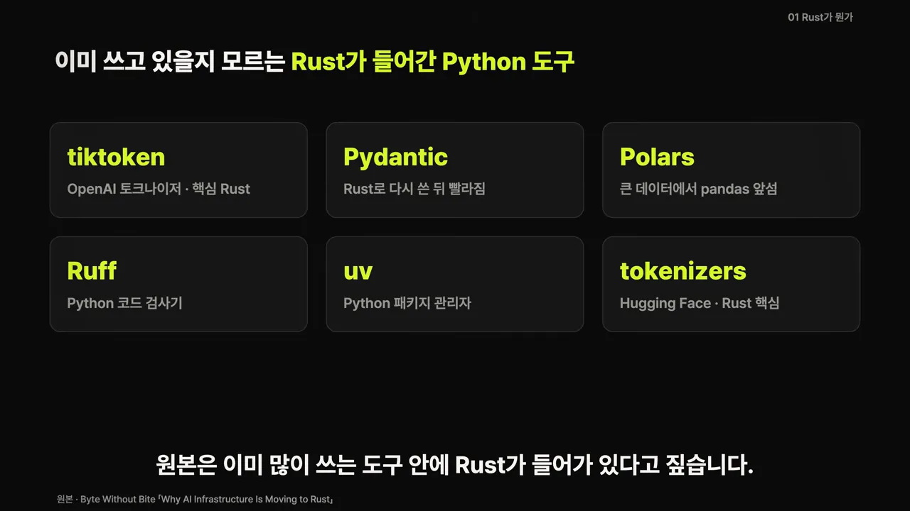
왜 지금 Rust일까요: 보안, GIL, AI
영상은 '왜 하필 지금'에 세 가지 답을 내놔요. 보안, AI 서비스의 요구, 그리고 AI가 코드를 쓰기 시작했다는 점이에요.
① 보안: 버그의 큰 몫이 메모리 실수예요
원래 영상은 마이크로소프트가 매년 고치는 보안 버그의 약 70%가 메모리 안전성 문제라고 짚어요. 구글 Chromium 팀도 비슷한 숫자를 냈어요. 여기에 영상은 구글 안드로이드 사례를 더해요. 새 코드를 메모리 안전한 언어로 쓰는 전략을 편 끝에, 2025년 메모리 안전 취약점이 처음으로 전체의 20% 아래로 내려갔어요. 아래 슬라이드는 같은 양의 코드에서 나온 취약점을 점으로 찍었어요. 왼쪽 빨간 점 덩어리가 C·C++ 코드의 1000, 오른쪽 노란 점 하나가 Rust 코드의 1이에요.
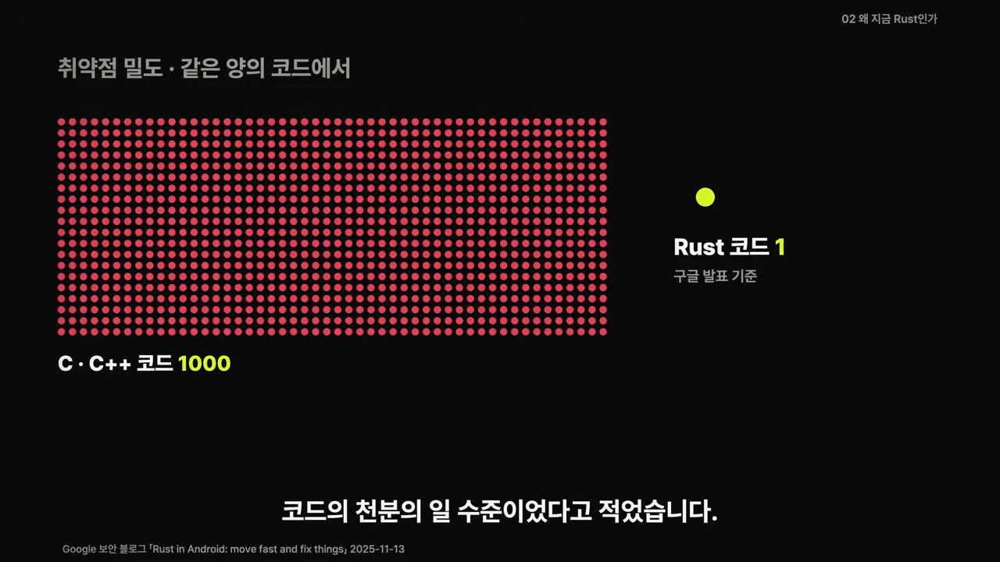
그래서 큰 곳들이 핵심 코드를 옮기고 있어요. xAI 코드는 대부분 Rust이고, X는 옛 트위터의 Scala 코드를 Rust로 바꾸는 중이에요. GitHub는 Copilot 런타임을 Node.js의 TypeScript에서 Rust로 옮긴다고 했어요. 커널 쪽 변화는 아래 슬라이드에 있어요. 'Rust 실험 단계'가 '정식 구성 요소'로 바뀌었고, Rust for Linux의 Miguel Ojeda가 남긴 말이 인용돼 있어요.
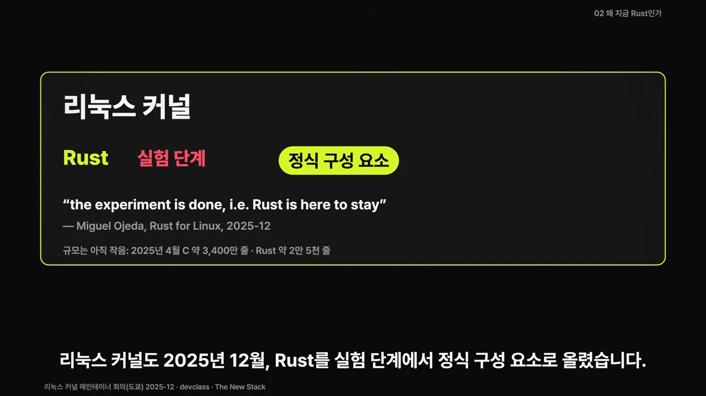
② AI 서비스와 GIL: 계산대가 하나뿐인 마트
두 번째 이유는 AI 서비스가 많은 요청을 동시에 처리해야 한다는 점이에요. 여기서 걸리는 게 Python의 GIL이에요. Python 전체에 자물쇠가 하나 걸려 있어서, 스레드를 늘려도 한 번에 한 스레드만 Python 코드를 실행해요. 영상의 비유로는 계산대가 하나뿐인 마트예요. 줄을 늘려도 계산은 한 명씩만 해요.
이 채널은 그걸 직접 재 봤어요. 아래 그래프의 가로축이 스레드 수(1~12), 세로축이 초당 처리량(MB(Megabyte))이에요. 스레드마다 자기 토크나이저를 따로 쓰게 했는데도, Python 선은 바닥에 거의 평평하게 깔려 있고 끝에 'Python 3.14 19.0'이 찍혀 있어요.
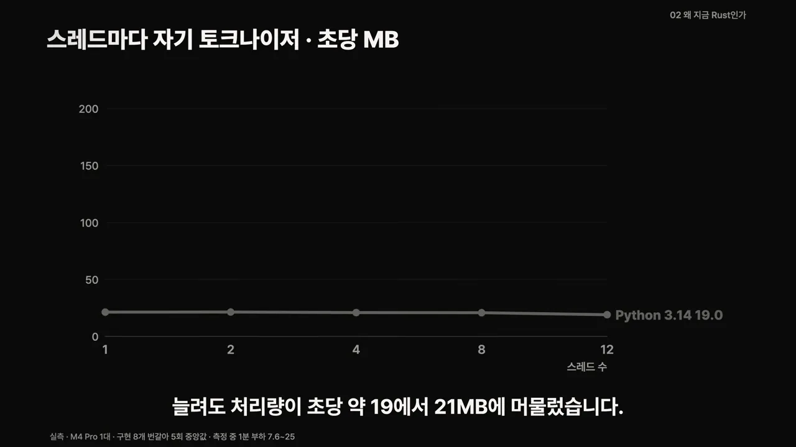
③ AI가 코드를 쓰기 시작했어요
세 번째가 가장 새로운 이유예요. 예전엔 수백만 줄을 다른 언어로 다시 짜는 비용이 너무 커서 엄두를 못 냈어요. 이제 그 번역을 AI에게 맡기려는 시도가 나왔어요. DARPA(Defense Advanced Research Projects Agency)는 2024년 C 코드를 Rust로 자동 번역하는 TRACTOR(Translating All C to Rust) 프로그램을 시작하며 대형 언어 모델을 쓰는 방법을 공모했어요. 아래 슬라이드는 앞에서 본 마이크로소프트 엔지니어의 목표예요. 엔지니어 1명, 기간 1달, 코드 100만 줄이에요. AI와 알고리즘을 섞어서요. 본인은 이게 연구 프로젝트라고 덧붙였어요.
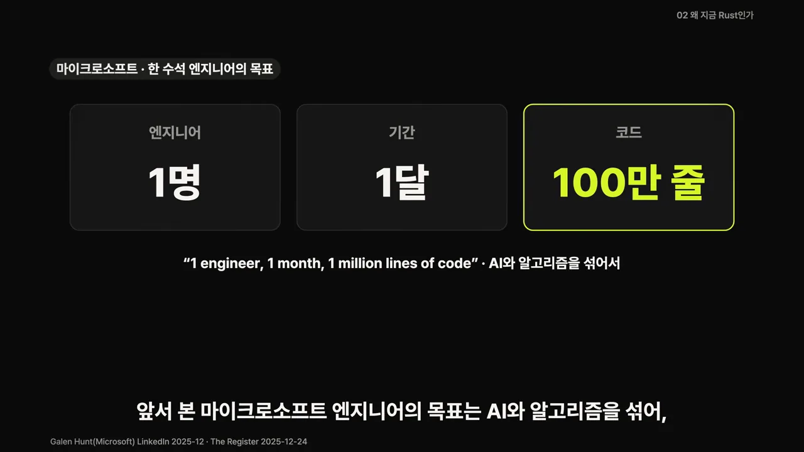
옮기는 비용이 내려가면 남는 질문은 'AI가 쓴 코드를 어떻게 믿느냐'예요. 사람이 수천 줄을 다 읽을 수는 없어요. 그래서 규칙 위반을 미리 걸러 주는 컴파일러가 있는 언어가 유리하다는 설명이 나와요. 슬라이드 오른쪽 아래 노란 딱지 '정말 그런지 → 03 실험'처럼, 영상은 이 설명을 그대로 믿지 않고 다음 장에서 직접 확인해요.
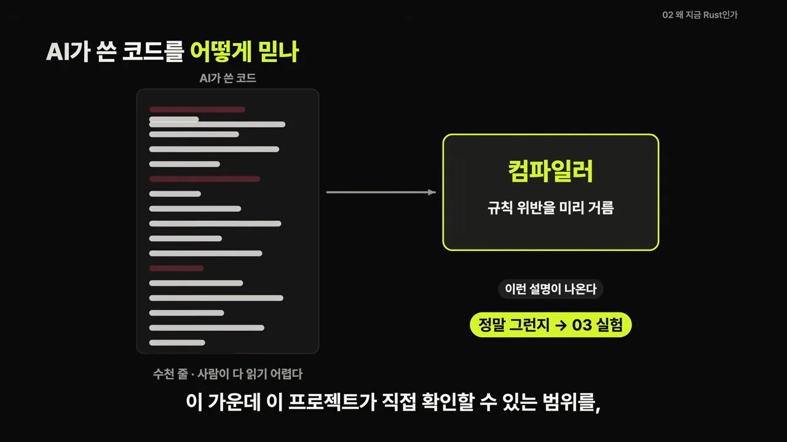
두 에이전트로 직접 옮겨 봤어요
실험 대상은 토크나이저예요. LLM(Large Language Model)에 넣을 글을 토큰 번호로 바꾸는 부품이에요. Claude Code와 Codex 두 에이전트에게 같은 Python 토크나이저를 Rust로 옮기게 했어요. 합격 기준은 미리 정했어요. 원본 Python과 출력이 하나도 다르지 않은지 보는 테스트 33개예요.
아래 기록 카드가 결과예요. 왼쪽 Claude Code는 188초, 오른쪽 Codex는 397초가 걸렸어요. 둘 다 컴파일 에러 없이 첫 빌드에 성공했고 33개를 모두 통과했어요. 아래 노란 칸 '바깥 재실행: 33 passed'는 에이전트 말만 믿지 않고, 끝난 뒤 바깥에서 테스트를 다시 돌려 확인했다는 표시예요.
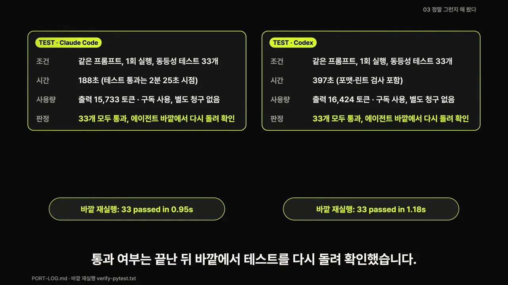
얼마나 빨라졌나요
속도는 같은 글 1.75MB를 토큰으로 바꾸는 시간으로 쟀어요. 캐시가 빈 첫 실행에서 Python은 초당 7.55MB, Claude가 옮긴 Rust는 28.5MB, Codex가 옮긴 Rust는 57.6MB였어요. 그런데 '몇 배'는 조건마다 달라요. 아래 표의 세 칸이 조건이에요. 캐시가 빈 첫 실행, 캐시를 끈 순수 계산, 캐시를 다 채운 뒤예요.
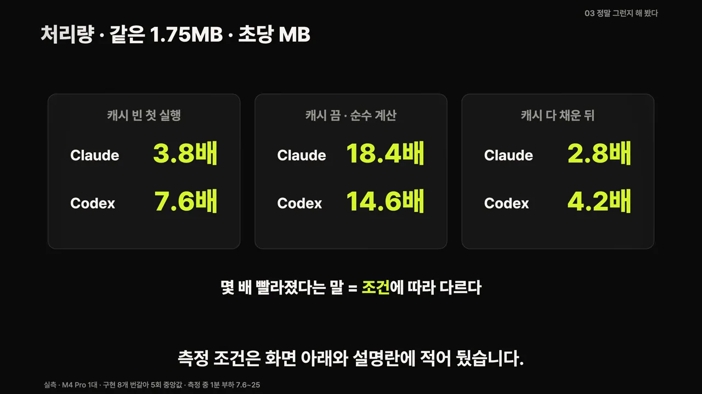
| 조건 | Claude 버전 | Codex 버전 |
|---|---|---|
| 캐시 빈 첫 실행 | 3.8배 | 7.6배 |
| 캐시 끔 · 순수 계산 | 18.4배 | 14.6배 |
| 캐시 다 채운 뒤 | 2.8배 | 4.2배 |
테스트를 다 통과하고도 Python보다 느려진 코드
이번엔 토크나이저 하나를 스레드 12개가 함께 쓰게 했어요. 아래 그래프에서 흰 선이 Claude 버전, 빨간 선이 Codex 버전이에요. 흰 선은 스레드가 늘수록 올라가 초당 189.1MB에 닿아요. 빨간 선은 거꾸로 내려가 10.7MB에서 끝나요. 바닥의 회색 선이 같은 조건의 Python(20.2MB)이에요. Codex 버전이 Python보다도 느려진 거예요.
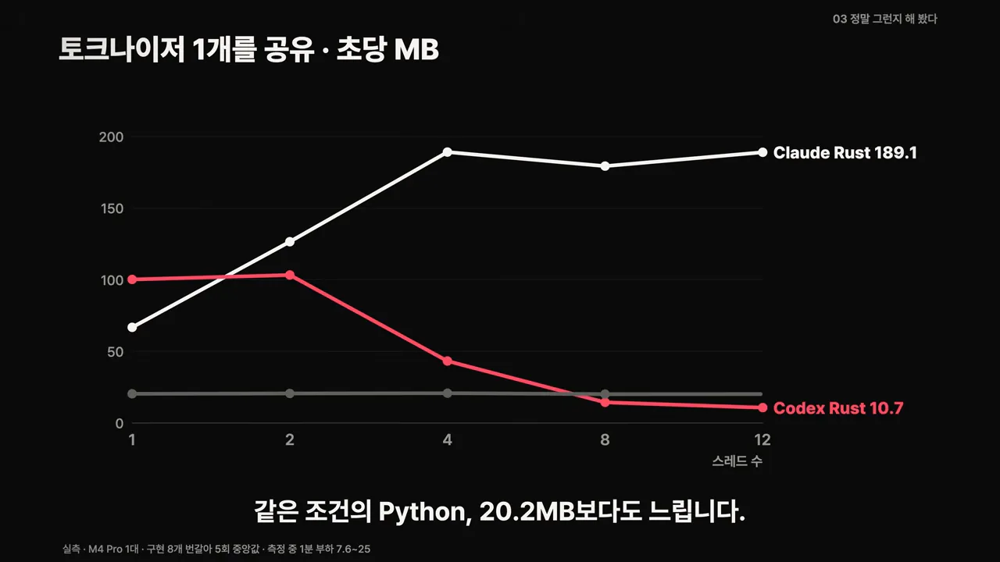
영상에 나온 숫자를 한 그림에 모으면 이 뒤집힘이 더 잘 보여요. 파란 막대가 혼자 돌 때(1스레드, 캐시 빈 첫 실행), 주황 막대가 토크나이저 하나를 12스레드가 함께 쓸 때예요. 두 조건은 측정 방식이 달라서, 막대끼리 몇 배인지 비교하기보다 순위가 어떻게 바뀌는지 보면 돼요.
원인은 코드에 있었어요. 단어 조각 하나를 찾을 때마다 캐시에 자물쇠를 걸었다 풀었거든요. 영상의 비유로는 사전 한 권을 여럿이 같이 보는데, 단어 하나 찾을 때마다 자물쇠를 열고 닫는 셈이에요. 그런데 테스트는 이걸 잡지 못했어요. 아래 슬라이드가 그 이유를 두 줄로 보여 줘요. 체크 표시는 '결과가 원본과 같은가', X 표시는 '여럿이 함께 쓸 때 빠른가 — 보지 않음'이에요.
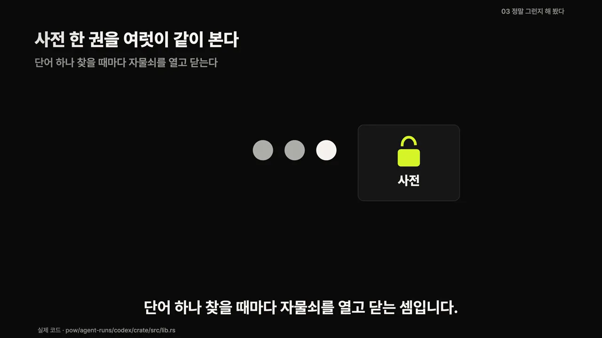
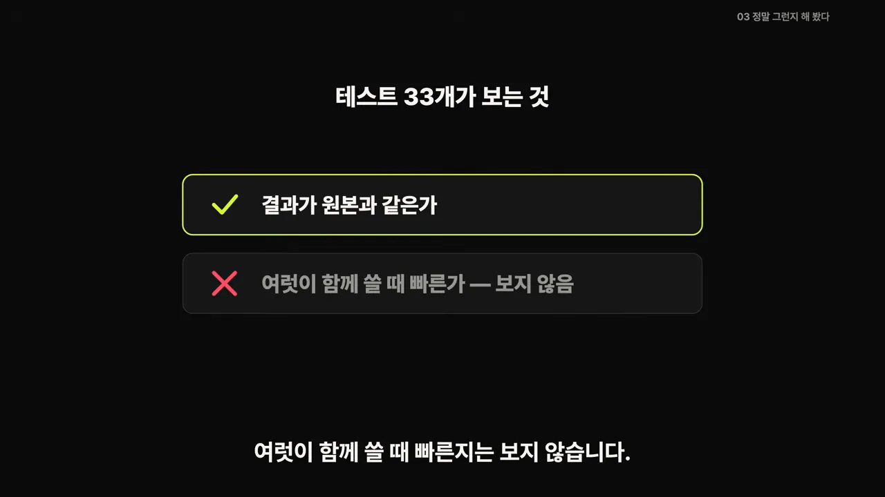
고치는 방법은 단순했어요. 이 숫자와 다시 재는 명령을 Codex에게 그대로 돌려줬어요. Codex는 7분 10초 만에 읽기 자물쇠를 문서당 한 번으로 모으는 등 코드를 고쳤어요. 아래 막대에서 빨간 10.7이 노란 145.9로, 'Rust 안 병렬 함수'도 11.8에서 179.6으로 올라갔어요.
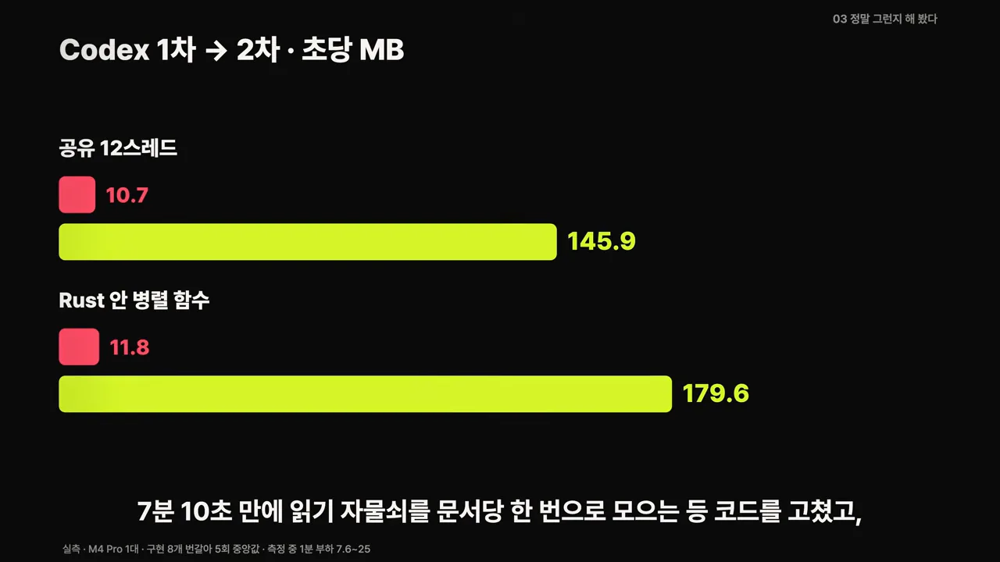
컴파일러가 막은 것, 막지 못한 것
그럼 '잘못 쓰는 순간 컴파일러가 막아 준다'는 설명은 맞을까요? 영상은 작은 실험을 따로 해요. 스레드 8개가 카운터 하나에 100만 번씩 더하는 코드예요. 정답은 800만이에요. GIL을 끈 Python 3.14t에서 세 번 돌린 결과가 아래 화면이에요. 빨간 숫자 1,401,069, 2,008,935, 1,099,535가 보이고, 그 위 딱지는 '에러 메시지 없음 · 틀린 숫자가 그냥 나옴'이에요.
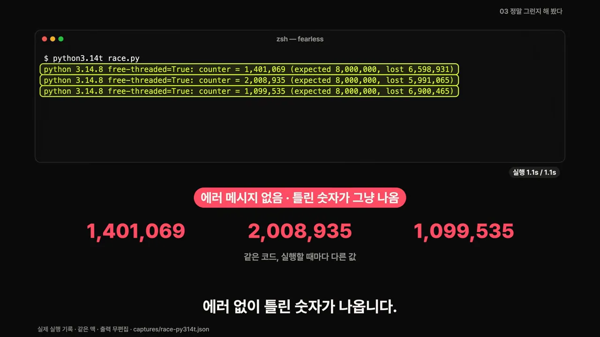
같은 실수를 Rust로 쓰면 빌드 단계에서 멈춰요. 아래 화면 노란 테두리 줄이 핵심이에요. Rc<RefCell<u64>> cannot be sent between threads safely. 이 값은 스레드 사이로 안전하게 보낼 수 없다는 E0277 에러예요. 안전한 타입으로 바꾸면 빌드가 되고, 매번 정확히 800만이 나와요.
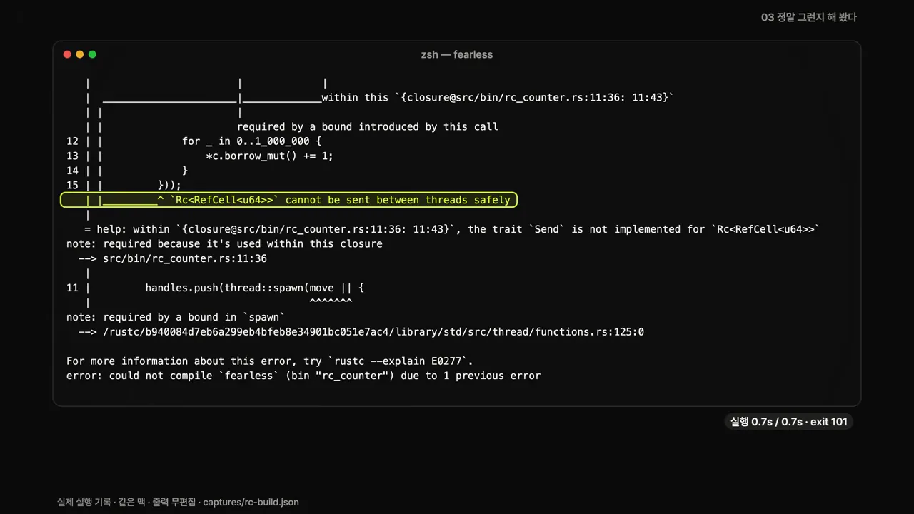
다만 영상은 선을 분명히 그어요. 컴파일러가 막은 건 안전하지 않은 데이터 공유까지예요. 앞의 Codex 버전처럼 '안전하지만 느린' 코드는 그대로 통과해요. 결과가 맞는지는 테스트가, 빠른지는 측정이 따로 봐야 했어요. 그래서 영상의 권고는 이래요. 에이전트가 옮긴 코드는 테스트를 통과한 뒤에도, 같은 입력으로 여러 스레드에서 한 번 더 재 보세요.
우리도 갈아타야 할까요?
원래 영상의 결론은 이래요.
Rust is not replacing Python in AI. It's quietly replacing the C++ underneath it.
Rust는 AI에서 Python을 대체하는 게 아니에요. 그 밑의 C++를 조용히 대체하고 있어요.
— 원래 영상 (이 영상 09:30 부근)
Python으로 일하는 쪽에서 보면 실제로 바뀐 게 거의 없었어요. 이 실험에서 호출하는 코드는 import 한 줄만 바꿨어요. 아래 두 터미널은 from bpe import Tokenizer로 돌린 왼쪽과 from rustbpe import Tokenizer로 돌린 오른쪽이에요. 노란 테두리 줄을 보면 둘 다 토큰 629,740개, 해시값까지 같아요. 실행 시간만 0.8초에서 0.3초로 줄었어요.
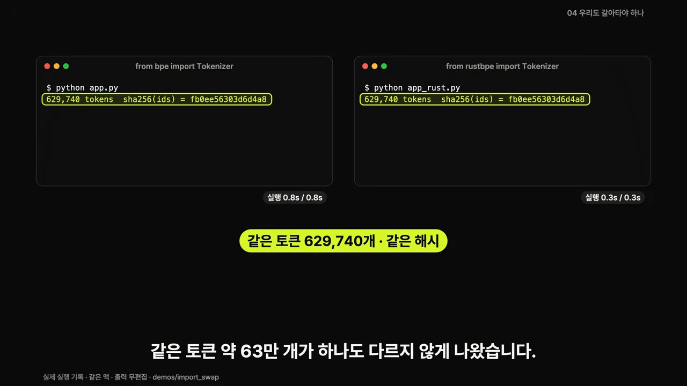
옮길 곳과 재 보고 정할 곳
그렇다고 다 옮길 필요는 없어요. 아래 슬라이드는 세 칸으로 나눠요. 왼쪽 '옮길 곳'은 순수 Python 반복문이 CPU를 붙잡는 곳이에요. 이번 토크나이저가 그런 경우라 3.8~7.6배가 나왔어요. 오른쪽 '재 보고 정할 곳'은 이미 NumPy나 C 라이브러리로 도는 계산이에요. 아래 칸은 C·C++ 시스템이 있는 팀의 경우예요.
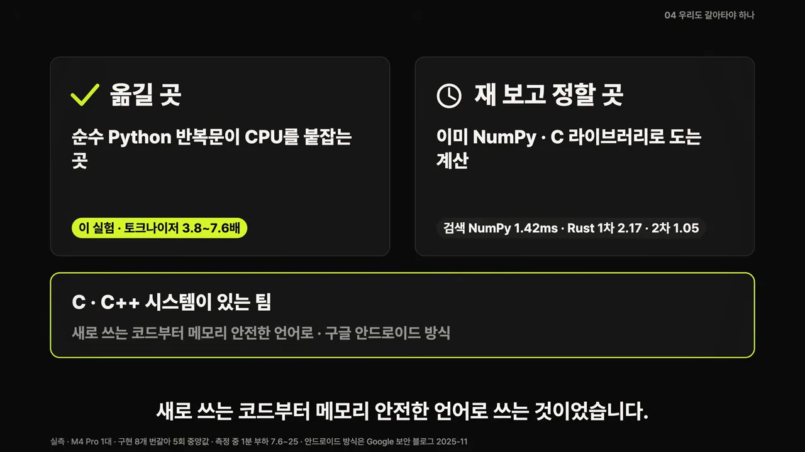
오른쪽 칸의 숫자가 그 근거예요. NumPy 검색을 Rust로 처음 다시 짠 코드는 1.42ms에서 2.17ms로 오히려 느려졌어요. 두 번째로 최적화한 뒤에야 1.05ms로 앞섰어요. C·C++ 팀에게는 구글 안드로이드가 택한 방식을 소개해요. 기존 코드를 한꺼번에 옮기지 않고, 새로 쓰는 코드부터 메모리 안전한 언어로 쓰는 거예요.
기준 세 가지와 프롬프트
영상은 이걸 기준 세 가지로 정리해요. 아래 슬라이드 오른쪽 세 칸이 그대로 그 순서예요.
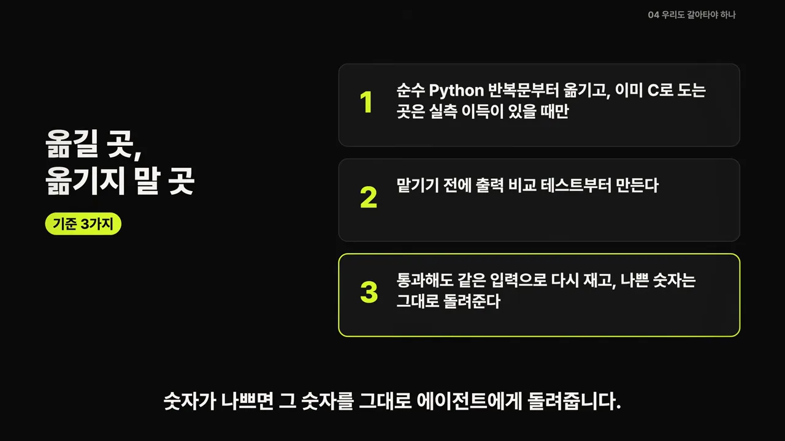
- 순수 Python 반복문이 CPU를 잡아먹는 곳부터 옮겨요 — 이미 C로 도는 곳은 재 봐서 이득이 있을 때만 손대요.
- 에이전트에게 맡기기 전에 원본과 출력을 비교하는 테스트부터 만들어요 — 실험의 테스트 33개가 이 역할이었어요.
- 테스트를 통과해도 같은 입력으로 다시 재요 — 숫자가 나쁘면 그 숫자를 그대로 에이전트에게 돌려줘요. Codex 버전이 10.7MB에서 146MB로 올라온 게 이 단계였어요
이 순서를 프롬프트로 정리한 화면도 나와요. 화면을 캡처해 Claude에 붙여 넣고, 동그라미(○○) 자리만 옮기려는 파일과 함수 이름으로 바꾸면 된다고 해요. 3번 줄의 'GIL을 풀어서'는 Rust 쪽에서 무거운 계산을 하는 동안 GIL을 놓아, 다른 Python 스레드가 동시에 부를 수 있게 하라는 뜻이에요.
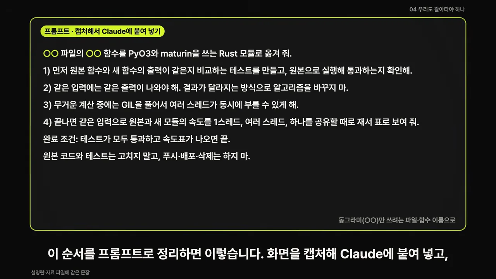
화면의 글자를 그대로 옮기면 이래요.
○○ 파일의 ○○ 함수를 PyO3와 maturin을 쓰는 Rust 모듈로 옮겨 줘.
1) 먼저 원본 함수와 새 함수의 출력이 같은지 비교하는 테스트를 만들고, 원본으로 실행해 통과하는지 확인해.
2) 같은 입력에는 같은 출력이 나와야 해. 결과가 달라지는 방식으로 알고리즘을 바꾸지 마.
3) 무거운 계산 중에는 GIL을 풀어서 여러 스레드가 동시에 부를 수 있게 해.
4) 끝나면 같은 입력으로 원본과 새 모듈의 속도를 1스레드, 여러 스레드, 하나를 공유할 때로 재서 표로 보여 줘.
완료 조건: 테스트가 모두 통과하고 속도표가 나오면 끝.
원본 코드와 테스트는 고치지 말고, 푸시·배포·삭제는 하지 마.마지막 정리 화면은 이 영상 전체를 세 칸으로 줄여요. 컴파일러는 위험한 공유를 차단하고, 테스트는 결과가 같은지, 측정은 실제로 빠른지를 봐요. AI가 코드를 쓰는 시대에 Rust가 주목받는 이유는 빠르고 컴파일러가 메모리 실수를 미리 걸러 주기 때문이에요. 하지만 이 실험에서 결과와 속도까지 지킨 건 세 칸 모두였어요.
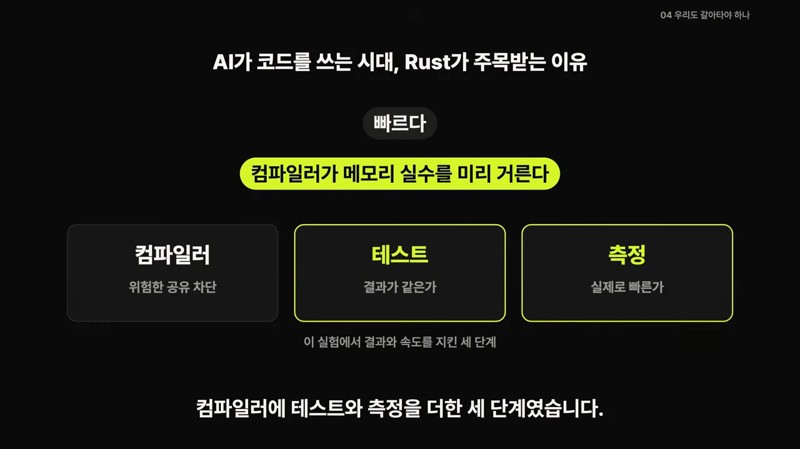